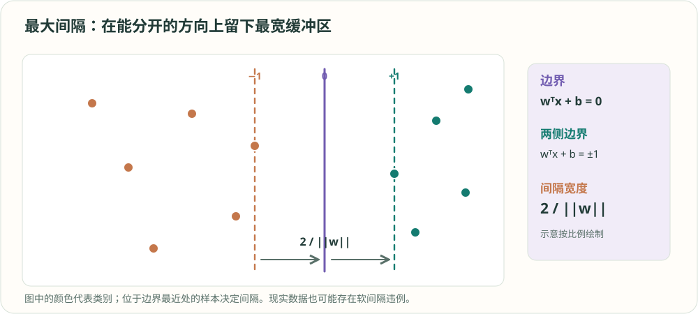
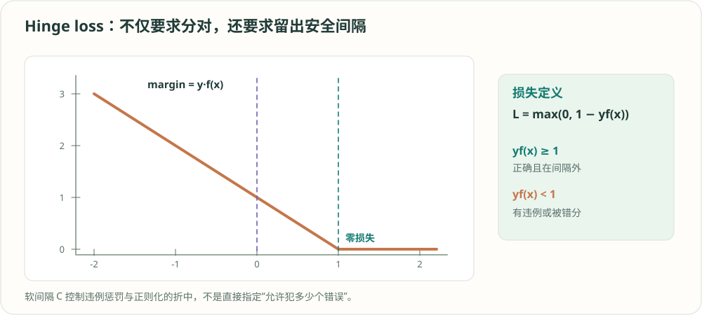
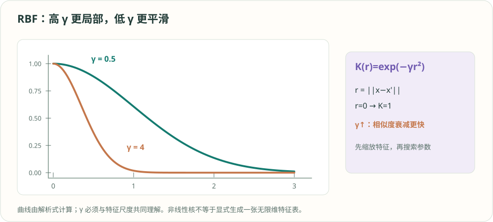

支持向量机：最大间隔、软间隔与核技巧
从可分数据的最大几何间隔出发，推导间隔与 ||w|| 的关系，再用 hinge loss 解释软间隔。RBF 核、C 与 gamma 的影响必须与标准化、交叉验证和数据规模一起理解。
01 · 从可分直线到最大间隔
考虑二维样本被分成正类和负类，线性分类器以函数 f(x)=wᵀx+b 的符号决定类别。一组可分样本可能对应无数条分类线。SVM 不是随便选一条线，而是寻找距离最近训练点尽量远的分割超平面，避免决策边界贴着某个偶然样本。
对标签 yᵢ∈{−1,+1}，规范化线性可分问题中的约束 yᵢ(wᵀxᵢ+b)≥1 定义两侧的函数间隔。位于 wᵀx+b=±1 的平行超平面之间的几何距离为 2/||w||₂；所以最大化间隔等价于最小化 ||w||²/2，并满足所有训练约束。

数学上“支持向量”通常对应对偶优化中非零乘子的训练点；并非图上任意靠近分界线的点都能仅凭视觉判断其对最终最优解有多大影响。标准化特征前后的距离尺度不同，间隔的数值意义也不同。
02 · 为什么要引入软间隔
真实样本可能有标签噪声、异常点或两类重叠。硬间隔模型要求全部样本被正确分开，因而对这些情况不适用。软间隔 SVM 引入非负松弛变量 ξᵢ，在一定程度上允许点落入间隔甚至被分错，用 C 对这些违反间隔约束的情况定价。
约束还包括 yᵢ(wᵀxᵢ+b)≥1−ξᵢ 和 ξᵢ≥0。C 越大，每单位违反间隔的代价通常越高，更倾向减少训练违例；但并不意味着“C 就是允许犯错的个数”，也不保证大 C 在测试集更好。
03 · hinge loss 把违例写成可优化函数
定义函数间隔 mᵢ=yᵢf(xᵢ)，hinge loss 为 max(0,1−mᵢ)。若 mᵢ≥1，样本不仅被分对，而且处于规定间隔外，损失为零；若 0<mᵢ<1，虽然分类正确，却仍侵犯间隔；若 mᵢ≤0，它已经在错误侧或边界上。

hinge loss 在拐点不可微，但可以使用次梯度或专门的优化方法；它不需要提供校准概率。SVC 的 decision_function 是用于排序及判别的分数，不应直接视作“某类真实发生的概率”。
04 · 核函数：不显式生成高维特征也能计算相似性
有些数据如两层同心圆无法由单一二维直线分开。若存在映射 φ(x)，理论上可以在映射后的特征空间寻找线性边界。核函数 K(x,x')=⟨φ(x),φ(x')⟩ 直接计算这类内积，而不必真的构造全部特征列；这就是核技巧的核心。
常用 RBF 核为 K(x,x')=exp(−γ||x−x'||²)，当样本重合时相似度为 1，距离越远则趋向 0。参数 γ 决定影响范围：更大的 gamma 使相似度随距离更快衰减，边界更容易追踪局部细节；小 gamma 使变化更平滑。但能否泛化必须由数据与验证集共同决定。

核函数并不是“任何相似度函数都可以随意代替”，理论上需要满足相应的正半定等条件。实际 scikit-learn SVC(gamma='scale') 使用基于特征数量及输入方差的缺省 gamma 规则；它对尺度敏感，不适合把未缩放的面积与年龄直接扔进去。
05 · C 与 gamma 的联合搜索不能看测试分数
在 RBF 核 SVM 中，C 控制训练损失与正则化之间的折中，gamma 控制相似性范围，二者会相互作用。通常在对数尺度取一组候选值，通过训练开发集内部的交叉验证寻找参数组合；整个 StandardScaler 必须位于 Pipeline 中，从每一训练折拟合。
对少量低维样本，核 SVM 可能很有效；对极大样本，精确核矩阵和支持向量数量带来计算与内存成本。对于高维稀疏文本，线性 SVM 或 SGD 等实现往往更适合扩展。多分类 SVC 内部基于成对类的训练机制，decision_function_shape 只是输出形式约定，勿与独立概率校准混淆。
06 · 离线实验：在两月牙数据上搜索 RBF SVC
使用两条互相交错的月牙合成数据，可以检验非线性边界是否比一条直线更合理。这里只对开发集做网格交叉验证，最后使用隔离测试集报告一个结果。示例不宣称此算法对所有二维非线性数据最优。
import numpy as np
from sklearn.datasets import make_moons
from sklearn.model_selection import train_test_split, GridSearchCV
from sklearn.pipeline import make_pipeline
from sklearn.preprocessing import StandardScaler
from sklearn.svm import SVC
from sklearn.metrics import balanced_accuracy_score
X, y = make_moons(n_samples=300, noise=0.18, random_state=11)
Xdev, Xtest, ydev, ytest = train_test_split(
X, y, test_size=0.2, stratify=y, random_state=11)
pipe = make_pipeline(StandardScaler(), SVC(kernel="rbf"))
search = GridSearchCV(
pipe, {"svc__C": [0.1, 1.0, 10.0],
"svc__gamma": [0.1, 1.0]},
cv=3, scoring="balanced_accuracy", n_jobs=1)
search.fit(Xdev, ydev)
prediction = search.predict(Xtest)
print("CV chosen parameters:", search.best_params_)
print("CV balanced accuracy:", round(search.best_score_, 3))
print("held-out balanced accuracy:",
round(balanced_accuracy_score(ytest, prediction), 3))
print("support vector count:",
search.best_estimator_.named_steps["svc"].n_support_.tolist())
assert prediction.shape == ytest.shape
assert 0 <= search.best_score_ <= 1需 Python 3.10+、NumPy 与 scikit-learn。这里固定随机种子并在训练折内拟合尺度；n_support_ 展示每个类别使用的支持向量数量。研究“C 变化是否改变泛化”时应比较不同折的分数范围，而不是只挑一张好看的边界图。
07 · 误用检查与来源
遇到高维稀疏文本、强烈类别不平衡、需要解释为概率的业务系统或数十万级样本时，先检查训练成本、类别权重、概率校准与上线延迟。缩放必须在训练折内完成；不使用测试集来挑 gamma；别把非线性边界和真实世界的因果分界混为一谈。